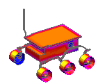
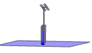
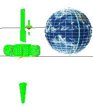

NX Space Systems Thermal is a comprehensive suite of thermal and radiation simulation tools for space and general applications.
Like NX Nastran, NX Space Systems Thermal is fully integrated in the NX Advanced Simulation environment. Teamcenter tools are supported for controlling multiple design iterations and case studies. You can use the results as boundary conditions for thermal stress and deflection analysis with the NX Nastran solver.
The thermal solver uses the conjugate gradient algorithm that employs a bi-conjugate gradient stabilized technique, with a pre-conditioning matrix. Because the solver utilizes the Newton-Raphson method for non-linear terms, it provides high performance for large, ill-conditioned systems. The solver also simulates diffuse radiative exchange with automatic view factor calculations for complex enclosures and shadowing surfaces.
NX Space Systems Thermal supports parallel processing of thermal modules with access to up to 8 processes per run, on a single machine.
NX Thermal and Flow DMP is an add-on product to NX Space Systems Thermal that removes any software limitations on the number of processes per run for parallel processing and enables parallel solutions over networks and clusters.
|
 |
Aerospace applications |
|
 |
Radiation simulation |
|
 |
Orbital heating |